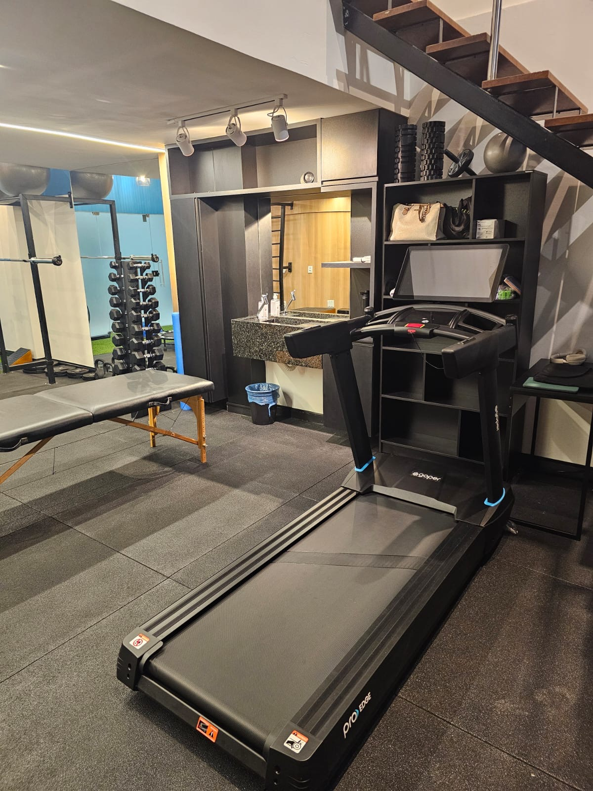
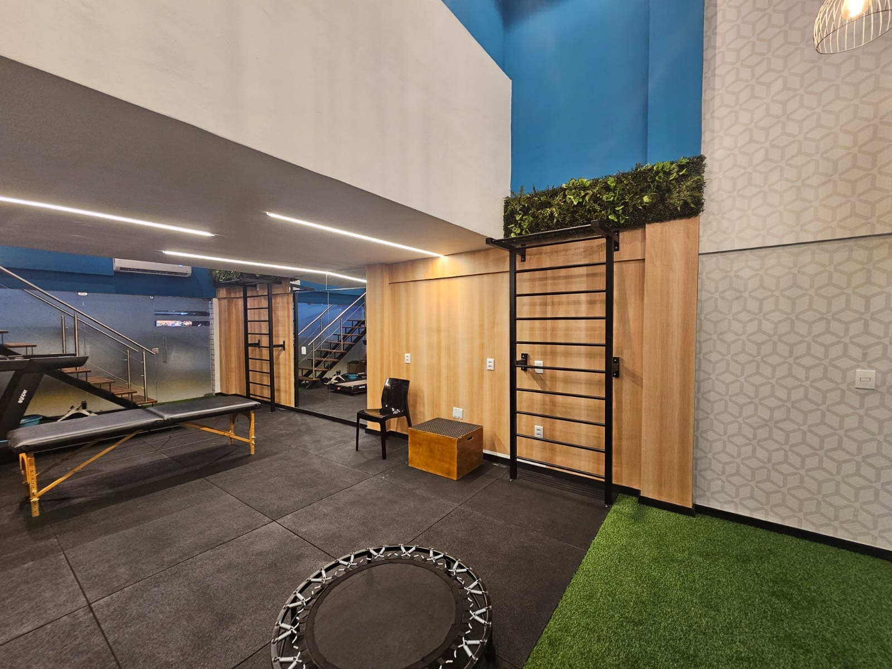
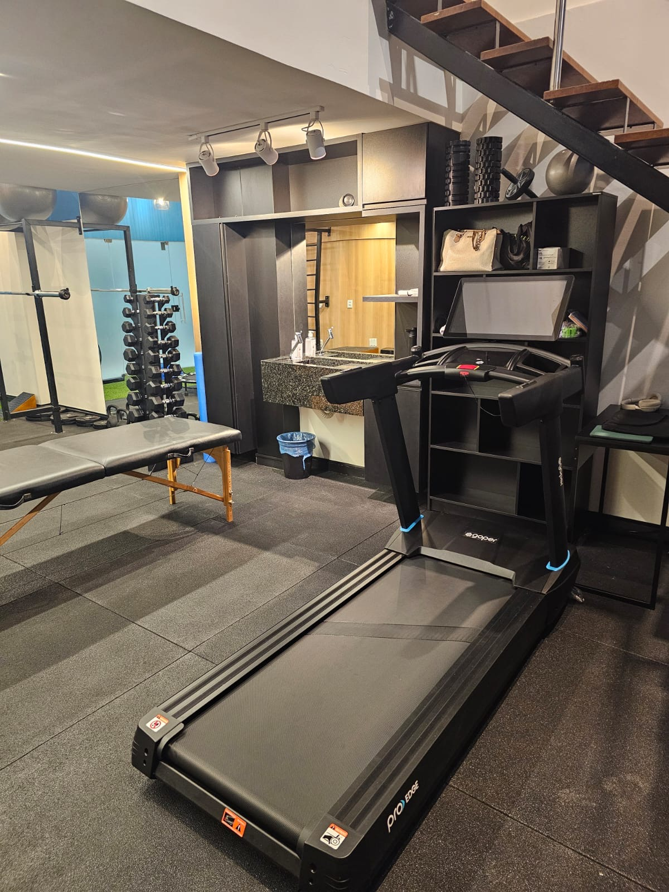
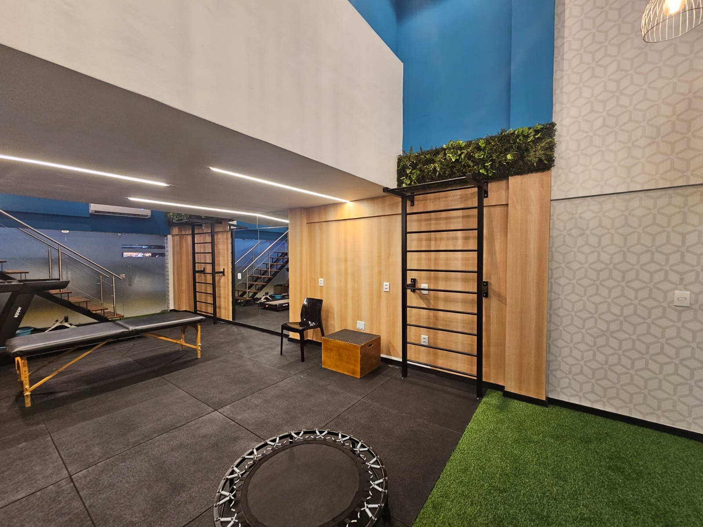

Nossos Diferenciais
Você no centro do cuidado sempre.
Conheça o que nossos pacientes dizem
Histórias que inspiram. Resultados que transformam.
Como podemos te ajudar
Planos de Tratamento personalizados para cada fase da sua reabilitação.
Tratamento não-farmacológico da dor
Tratamos dores com avaliação precisa, escuta ativa e acompanhamento contínuo. Cada plano é individualizado, respeita seus limites e busca um resultado duradouro.
- Dores na coluna (lombar, torácica e cervical)
- Hérnia de disco e dor ciática
- Dores de cabeça tensional, enxaqueca
- Disfunções da ATM
- Tensões musculares persistentes
- Ombro congelado
- Dor anterior no joelho
- Tendinopatias e fascite plantar
- Condições crônicas como fibromialgia e artrose.
Pré e Pós-operatórios Traumato-Ortopédicos
Preparamos seu corpo antes da cirurgia e aceleramos sua recuperação após, com planos progressivos, metas claras e reavaliações constantes.
- Fraturas
- Artroplastias de Quadril, Joelho e Ombro (próteses)
- Cirurgia de ombro (reparo de tendões, ombro congelado)
- Cirurgias no menisco (Meniscectomias e suturas meniscais)
- Reconstrução do ligamento cruzado anterior (LCA)
- Cirurgias na coluna (discectomias, artrodeses)
Fisioterapia Esportiva
Reabilitação, prevenção e retorno seguro ao esporte, com planos personalizados e avaliação tecnológica adaptada à sua modalidade.
- Distensões e lesões musculares
- Instabilidades, entorses e lesões ligamentares
- Lesões no ombro
- Ruptura do ligamento cruzado anterior (LCA)
- Condromalácia patelar e lesões no menisco
- Síndrome da banda iliotibial
- Pubalgia e canelite
- Recovery esportivo
Nossos Serviços
Recursos e técnicas que potencializam sua recuperação
Mobilizações e técnicas manuais para alívio da dor e ganho de mobilidade.
Ajustes sutis e precisos para restaurar a função de articulações e tecidos.
Manipulações articulares seguras com foco em ganho de mobilidade.
Exercícios terapêuticos para reabilitação funcional e fortalecimento.
Estímulos elétricos para modulação da dor e ativação muscular.
Terapia com laser para regenerar, cicatrizar e controlar a dor.
Avaliação de força muscular com alta precisão.
Mapeamento de pontos dolorosos e sensibilidade.
Equipamentos de ponta que potencializam o condicionamento físico com feedbacks objetivos e experiências imersivas.
Nosso Espaço
Conheça nosso espaço projetado para proporcionar conforto e bem-estar durante o seu tratamento. Contamos com salas equipadas com tecnologia de ponta, salas climatizadas e um ambiente acolhedor que favorece a recuperação.
 




Venha nos visitar e conhecer de perto as instalações da Clínica Vértice.
Estamos localizados no coração da cidade, com fácil acesso e estacionamento disponível.
Sobre Nós
A Vértice nasceu da paixão por cuidar e transformar vidas. Unimos ciência de alta qualidade, técnica especializada e humanização do cuidado para oferecer um atendimento individualizado, baseado nas melhores evidências e focado em resultados reais e duradouros.
Fundada pelo fisioterapeuta Pedro Castro, a clínica reúne profissionais especializados que compartilham da mesma visão: tratar com conhecimento, sensibilidade e compromisso focado no que realmente importa para você.
Aqui, cada pessoa é ouvida, compreendida e tratada de forma completa, com atenção à sua história e aos seus objetivos. Para isso, profissionais e pacientes caminham juntos rumo à reconquista da liberdade através do movimento.
Comece sua reabilitação com quem entende você.Conheça os nossos Profissionais

Dr. Pedro Castro
Pedro Castro é a mente e o coração da Vértice, com mais de 7 anos de experiência clínica dedicada ao tratamento não farmacológico da dor. Sua paixão pelo cuidado humano, aliada ao rigor científico, guia cada atendimento, proporcionando soluções eficazes e personalizadas para aliviar dores agudas e crônicas. Como líder da equipe, Pedro constrói um ambiente colaborativo e inovador, unindo técnicas avançadas à empatia para devolver movimento, liberdade e qualidade de vida a cada paciente.
- Graduado em Fisioterapia pela Universidade Federal do Rio Grande do Norte (UFRN)
- Pós-graduado em Osteopatia pela EBRAFIM
- Mestre em Fisioterapia pela UFRN
- Professor do curso de formação em Osteopatia (EBRAFIM)
- Professor da Especialização em Fisioterapia Traumato-ortopédica e Esportiva (UFRN)

Dr. Yves Oliveira
Yves alia conhecimento técnico, experiência ambulatorial, hospitalar e uma escuta atenta para transformar o processo de reabilitação em um caminho claro e acolhedor. Sua trajetória é marcada por dedicação à fisioterapia traumato-ortopédica, com foco em pacientes no pós-operatório — especialmente fraturas e casos complexos da ortopedia. Com didática apurada, acredita que educar o paciente é parte essencial do tratamento. Na Vértice, Dr. Yves atua com foco em reabilitação ortopédica pós-cirúrgica, cuidando de cada paciente com dedicação, clareza e compromisso com o resultado.
- Graduado em Fisioterapia pela Universidade Federal do Rio Grande do Norte (UFRN)
- Especialista em Fisioterapia Traumato-Ortopédica pela UNIFESP (Residência Multiprofissional)
- Fisioterapeuta no HUOL (Natal/RN)
Dra. Luísa Braga
Com formação sólida, experiência internacional e foco na escuta qualificada, Luísa alia técnica, acolhimento e uma visão atual da fisioterapia para ajudar pacientes a retomarem sua rotina com segurança e autonomia. Na Vértice, atua com foco em reabilitação esportiva, sempre respeitando o tempo e o potencial de cada paciente. Para ela, movimento não é pressa; é processo, e cada etapa importa.
- Graduada em Fisioterapia pela UFRN
- Pós-graduanda em Fisioterapia Traumato-Ortopédica pela FEO
- Preceptora da Liga de Fisioterapia Esportiva da UFRN (LEFERN)
- Aprimoramento internacional em Fisioterapia Ortopédica pela ESS IPP - Porto/Portugal
Agende sua avaliação
Comece uma nova fase com mais movimento, menos dor e muito mais qualidade de vida.